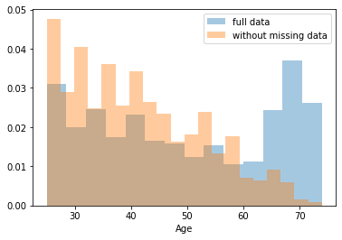
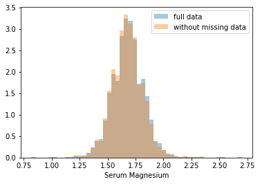
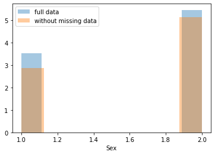
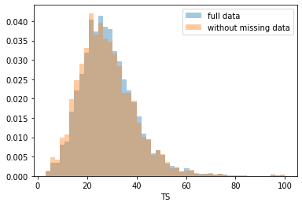
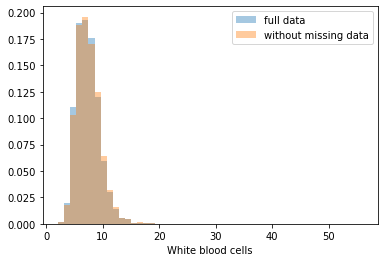
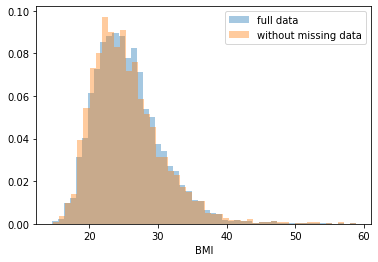

import shap
import sklearn
import itertools
import pydotplus
import numpy as np
import pandas as pd
import seaborn as sns
import matplotlib.pyplot as plt
from IPython.display import Image
from sklearn.tree import export_graphviz
from sklearn.externals.six import StringIO
from sklearn.tree import DecisionTreeClassifier
from sklearn.ensemble import RandomForestClassifier
from sklearn.model_selection import train_test_split
from sklearn.experimental import enable_iterative_imputer
from sklearn.impute import IterativeImputer, SimpleImputer
# We'll also import some helper functions that will be useful later on.
from util import load_data, cindex
from public_tests import *1 Introduction
In this article we will build a model to predict the 10-year risk of death of individuals from the NHANES I epidemiology dataset.
Topics we will cover will include:
- Dealing with Missing Data
- Complete Case Analysis.
- Imputation
- Decision Trees
- Evaluation.
- Regularization.
- Random Forests
- Hyperparameter Tuning.
2 Import Packages
shapis a library that explains predictions made by machine learning models.sklearnis one of the most popular machine learning libraries.itertoolsallows us to conveniently manipulate iterable objects such as lists.pydotplusis used together withIPython.display.Imageto visualize graph structures such as decision trees.numpyis a fundamental package for scientific computing in Python.pandasis what we’ll use to manipulate our data.seabornis a plotting library which has some convenient functions for visualizing missing data.matplotlibis a plotting library.
This dataset contains various features of hospital patients as well as their outcomes, i.e. whether or not they died within 10 years.
X_dev, X_test, y_dev, y_test = load_data(10, 'data/NHANESI_subset_X.csv', 'data/NHANESI_subset_y.csv')The dataset has been split into a development set (or dev set), which we will use to develop our risk models, and a test set, which we will use to test our models.
We further split the dev set into a training and validation set, respectively to train and tune our models, using a 75/25 split (note that we set a random state to make this split repeatable).
X_train, X_val, y_train, y_val = train_test_split(X_dev, y_dev, test_size=0.25, random_state=10)print("X_train shape: {}".format(X_train.shape))
X_train.head()X_train shape: (5147, 18)| Age | Diastolic BP | Poverty index | Race | Red blood cells | Sedimentation rate | Serum Albumin | Serum Cholesterol | Serum Iron | Serum Magnesium | Serum Protein | Sex | Systolic BP | TIBC | TS | White blood cells | BMI | Pulse pressure | |
|---|---|---|---|---|---|---|---|---|---|---|---|---|---|---|---|---|---|---|
| 1599 | 43.0 | 84.0 | 637.0 | 1.0 | 49.3 | 10.0 | 5.0 | 253.0 | 134.0 | 1.59 | 7.7 | 1.0 | NaN | 490.0 | 27.3 | 9.1 | 25.803007 | 34.0 |
| 2794 | 72.0 | 96.0 | 154.0 | 2.0 | 43.4 | 23.0 | 4.3 | 265.0 | 106.0 | 1.66 | 6.8 | 2.0 | 208.0 | 301.0 | 35.2 | 6.0 | 33.394319 | 112.0 |
| 1182 | 54.0 | 78.0 | 205.0 | 1.0 | 43.8 | 12.0 | 4.2 | 206.0 | 180.0 | 1.67 | 6.6 | 2.0 | NaN | 363.0 | 49.6 | 5.9 | 20.278410 | 34.0 |
| 6915 | 59.0 | 90.0 | 417.0 | 1.0 | 43.4 | 9.0 | 4.5 | 327.0 | 114.0 | 1.65 | 7.6 | 2.0 | NaN | 347.0 | 32.9 | 6.1 | 32.917744 | 78.0 |
| 500 | 34.0 | 80.0 | 385.0 | 1.0 | 77.7 | 9.0 | 4.1 | 197.0 | 64.0 | 1.74 | 7.3 | 2.0 | NaN | 376.0 | 17.0 | 8.2 | 30.743489 | 30.0 |
Our targets y will be whether or not the target died within 10 years.
y_train.head(20)1599 False
2794 True
1182 False
6915 False
500 False
1188 True
9739 False
3266 False
6681 False
8822 False
5856 True
3415 False
9366 False
7975 False
1397 False
6809 False
9461 False
9374 False
1170 True
158 False
Name: time, dtype: booli = 10
print(X_train.iloc[i,:])
print("\nDied within 10 years? {}".format(y_train.loc[y_train.index[i]]))Age 67.000000
Diastolic BP 94.000000
Poverty index 114.000000
Race 1.000000
Red blood cells 43.800000
Sedimentation rate 12.000000
Serum Albumin 3.700000
Serum Cholesterol 178.000000
Serum Iron 73.000000
Serum Magnesium 1.850000
Serum Protein 7.000000
Sex 1.000000
Systolic BP 140.000000
TIBC 311.000000
TS 23.500000
White blood cells 4.300000
BMI 17.481227
Pulse pressure 46.000000
Name: 5856, dtype: float64
Died within 10 years? TrueLooking at our data in X_train, we see that some of the data is missing: some values in the output of the previous cell are marked as NaN (“not a number”).
Missing data is a common occurrence in data analysis, that can be due to a variety of reasons, such as measuring instrument malfunction, respondents not willing or not able to supply information, and errors in the data collection process.
Let’s examine the missing data pattern. seaborn is an alternative to matplotlib that has some convenient plotting functions for data analysis. We can use its heatmap function to easily visualize the missing data pattern.
sns.heatmap(X_train.isnull(), cbar=False)
plt.title("Training")
plt.show()
sns.heatmap(X_val.isnull(), cbar=False)
plt.title("Validation")
plt.show()

For each feature, represented as a column, values that are present are shown in black, and missing values are set in a light color.
From this plot, we can see that many values are missing for systolic blood pressure (Systolic BP).
We will write a function to compute the fraction of cases with missing data. This will help us decide how we handle this missing data in the future.
def fraction_rows_missing(df):
'''
Return percent of rows with any missing
data in the dataframe.
Input:
df (dataframe): a pandas dataframe with potentially missing data
Output:
frac_missing (float): fraction of rows with missing data
'''
return sum(df.isnull().any(axis=1)) / len(df)### test cell
fraction_rows_missing_test(fraction_rows_missing, X_train, X_val, X_test)Example dataframe:
a b
0 NaN 1.0
1 1.0 NaN
2 1.0 0.0
3 NaN 1.0
Computed fraction missing: 0.75
Fraction of rows missing from X_train: 0.6986594132504371
Fraction of rows missing from X_val: 0.703962703962704
Fraction of rows missing from X_test: 0.0
All tests passed.We see that our train and validation sets have missing values, but luckily our test set has complete cases.
As a first pass, we will begin with a complete case analysis, dropping all of the rows with any missing data.
X_train_dropped = X_train.dropna(axis='rows')
y_train_dropped = y_train.loc[X_train_dropped.index]
X_val_dropped = X_val.dropna(axis='rows')
y_val_dropped = y_val.loc[X_val_dropped.index]
print("X_train_dropped shape: {}".format(X_train_dropped.shape))
X_train_dropped.head() X_train_dropped shape: (1551, 18)| Age | Diastolic BP | Poverty index | Race | Red blood cells | Sedimentation rate | Serum Albumin | Serum Cholesterol | Serum Iron | Serum Magnesium | Serum Protein | Sex | Systolic BP | TIBC | TS | White blood cells | BMI | Pulse pressure | |
|---|---|---|---|---|---|---|---|---|---|---|---|---|---|---|---|---|---|---|
| 2794 | 72.0 | 96.0 | 154.0 | 2.0 | 43.4 | 23.0 | 4.3 | 265.0 | 106.0 | 1.66 | 6.8 | 2.0 | 208.0 | 301.0 | 35.2 | 6.0 | 33.394319 | 112.0 |
| 5856 | 67.0 | 94.0 | 114.0 | 1.0 | 43.8 | 12.0 | 3.7 | 178.0 | 73.0 | 1.85 | 7.0 | 1.0 | 140.0 | 311.0 | 23.5 | 4.3 | 17.481227 | 46.0 |
| 9374 | 68.0 | 80.0 | 201.0 | 1.0 | 46.2 | 20.0 | 4.1 | 223.0 | 204.0 | 1.54 | 7.2 | 1.0 | 140.0 | 275.0 | 74.2 | 17.2 | 20.690581 | 60.0 |
| 8819 | 68.0 | 80.0 | 651.0 | 1.0 | 47.7 | 16.0 | 4.3 | 178.0 | 168.0 | 1.97 | 7.3 | 1.0 | 102.0 | 339.0 | 49.6 | 10.2 | 27.719091 | 22.0 |
| 7331 | 73.0 | 88.0 | 68.0 | 2.0 | 42.1 | 19.0 | 3.6 | 215.0 | 64.0 | 1.59 | 5.7 | 2.0 | 190.0 | 334.0 | 19.2 | 6.6 | 31.880432 | 102.0 |
We will use scikit-learn to build a decision tree for the hospital dataset using the train set.
dt = DecisionTreeClassifier(max_depth=None, random_state=10)
dt.fit(X_train_dropped, y_train_dropped)DecisionTreeClassifier(ccp_alpha=0.0, class_weight=None, criterion='gini',
max_depth=None, max_features=None, max_leaf_nodes=None,
min_impurity_decrease=0.0, min_impurity_split=None,
min_samples_leaf=1, min_samples_split=2,
min_weight_fraction_leaf=0.0, presort='deprecated',
random_state=10, splitter='best')Next we will evaluate our model. We’ll use C-Index for evaluation.
The C-Index evaluates the ability of a model to differentiate between different classes, by quantifying how often, when considering all pairs of patients (A, B), the model says that patient A has a higher risk score than patient B when, in the observed data, patient A actually died and patient B actually lived. In our case, our model is a binary classifier, where each risk score is either 1 (the model predicts that the patient will die) or 0 (the patient will live).
More formally, defining permissible pairs of patients as pairs where the outcomes are different, concordant pairs as permissible pairs where the patient that died had a higher risk score (i.e. our model predicted 1 for the patient that died and 0 for the one that lived), and ties as permissible pairs where the risk scores were equal (i.e. our model predicted 1 for both patients or 0 for both patients), the C-Index is equal to:
\[\text{C-Index} = \frac{\#\text{concordant pairs} + 0.5\times \#\text{ties}}{\#\text{permissible pairs}}\]
y_train_preds = dt.predict_proba(X_train_dropped)[:, 1]
print(f"Train C-Index: {cindex(y_train_dropped.values, y_train_preds)}")
y_val_preds = dt.predict_proba(X_val_dropped)[:, 1]
print(f"Val C-Index: {cindex(y_val_dropped.values, y_val_preds)}")Train C-Index: 1.0
Val C-Index: 0.5629321808510638Unfortunately the tree seems to be overfitting: it fits the training data so closely that it doesn’t generalize well to other samples such as those from the validation set.
The training C-index comes out to 1.0 because, when initializing
DecisionTreeClasifier, we have leftmax_depthandmin_samples_splitunspecified. The resulting decision tree will therefore keep splitting as far as it can, which pretty much guarantees a pure fit to the training data.
To handle this, we can change some of the hyperparameters of our tree.
dt_hyperparams = {
'max_depth': 3
}dt_reg = DecisionTreeClassifier(**dt_hyperparams, random_state=10)
dt_reg.fit(X_train_dropped, y_train_dropped)
y_train_preds = dt_reg.predict_proba(X_train_dropped)[:, 1]
y_val_preds = dt_reg.predict_proba(X_val_dropped)[:, 1]
print(f"Train C-Index: {cindex(y_train_dropped.values, y_train_preds)}")
print(f"Val C-Index (expected > 0.6): {cindex(y_val_dropped.values, y_val_preds)}")Train C-Index: 0.688738755448391
Val C-Index (expected > 0.6): 0.6302692819148936As we have a low max_depth we can print the entire tree. This allows for easy interpretability.
dot_data = StringIO()
export_graphviz(dt_reg, feature_names=X_train_dropped.columns, out_file=dot_data,
filled=True, rounded=True, proportion=True, special_characters=True,
impurity=False, class_names=['neg', 'pos'], precision=2)
graph = pydotplus.graph_from_dot_data(dot_data.getvalue())
Image(graph.create_png())Overfitting, underfitting, and the bias-variance tradeoff
We can see a max_depth value of
3gives training and validation C-Indices of about0.689and0.630, and that amax_depthof2gives better agreement with values of about0.653and0.607. In the latter case, we have further reduced overfitting, at the cost of a minor loss in predictive performance.Contrast this with a
max_depthvalue of1, which results in C-Indices of about0.597for the training set and0.598for the validation set: we have eliminated overfitting but with a much stronger degradation of predictive performance.Lower predictive performance on the training and validation sets is indicative of the model underfitting the data: it neither learns enough from the training data nor is able to generalize to unseen data (the validation data in our case).
Finding a model that minimizes and acceptably balances underfitting and overfitting (e.g. selecting the model with a
max_depthof2over the other values) is a common problem in machine learning that is known as the bias-variance tradeoff.
No matter how you choose hyperparameters, a single decision tree is prone to overfitting. To solve this problem, we can try random forests, which combine predictions from many different trees to create a robust classifier.
As before, we will use scikit-learn to build a random forest for the data. We will use the default hyperparameters.
rf = RandomForestClassifier(n_estimators=100, random_state=10)
rf.fit(X_train_dropped, y_train_dropped)RandomForestClassifier(bootstrap=True, ccp_alpha=0.0, class_weight=None,
criterion='gini', max_depth=None, max_features='auto',
max_leaf_nodes=None, max_samples=None,
min_impurity_decrease=0.0, min_impurity_split=None,
min_samples_leaf=1, min_samples_split=2,
min_weight_fraction_leaf=0.0, n_estimators=100,
n_jobs=None, oob_score=False, random_state=10, verbose=0,
warm_start=False)Now we compute and report the C-Index for the random forest on the training and validation set.
y_train_rf_preds = rf.predict_proba(X_train_dropped)[:, 1]
print(f"Train C-Index: {cindex(y_train_dropped.values, y_train_rf_preds)}")
y_val_rf_preds = rf.predict_proba(X_val_dropped)[:, 1]
print(f"Val C-Index: {cindex(y_val_dropped.values, y_val_rf_preds)}")Train C-Index: 1.0
Val C-Index: 0.6660488696808511Training a random forest with the default hyperparameters results in a model that has better predictive performance than individual decision trees as in the previous section, but this model is overfitting.
We therefore need to tune (or optimize) the hyperparameters, to find a model that both has good predictive performance and minimizes overfitting.
The hyperparameters we choose to adjust will be:
n_estimators: the number of trees used in the forest.max_depth: the maximum depth of each tree.min_samples_leaf: the minimum number (ifint) or proportion (iffloat) of samples in a leaf.
The approach we implement to tune the hyperparameters is known as a grid search:
We define a set of possible values for each of the target hyperparameters.
A model is trained and evaluated for every possible combination of hyperparameters.
The best performing set of hyperparameters is returned.
The cell below implements a hyperparameter grid search, using the C-Index to evaluate each tested model.
def holdout_grid_search(clf, X_train_hp, y_train_hp, X_val_hp, y_val_hp, hyperparams, fixed_hyperparams={}):
'''
Conduct hyperparameter grid search on hold out validation set. Use holdout validation.
Hyperparameters are input as a dictionary mapping each hyperparameter name to the
range of values they should iterate over. Use the cindex function as your evaluation
function.
Input:
clf: sklearn classifier
X_train_hp (dataframe): dataframe for training set input variables
y_train_hp (dataframe): dataframe for training set targets
X_val_hp (dataframe): dataframe for validation set input variables
y_val_hp (dataframe): dataframe for validation set targets
hyperparams (dict): hyperparameter dictionary mapping hyperparameter
names to range of values for grid search
fixed_hyperparams (dict): dictionary of fixed hyperparameters that
are not included in the grid search
Output:
best_estimator (sklearn classifier): fitted sklearn classifier with best performance on
validation set
best_hyperparams (dict): hyperparameter dictionary mapping hyperparameter
names to values in best_estimator
'''
best_estimator = None
best_hyperparams = {}
# hold best running score
best_score = 0.0
# get list of param values
lists = hyperparams.values()
# get all param combinations
param_combinations = list(itertools.product(*lists))
total_param_combinations = len(param_combinations)
# iterate through param combinations
for i, params in enumerate(param_combinations, 1):
# fill param dict with params
param_dict = {}
for param_index, param_name in enumerate(hyperparams):
param_dict[param_name] = params[param_index]
# create estimator with specified params
estimator = clf(**param_dict, **fixed_hyperparams)
# fit estimator
estimator.fit(X_train_hp, y_train_hp)
# get predictions on validation set
preds = estimator.predict_proba(X_val_hp)
# compute cindex for predictions
estimator_score = cindex(y_val_hp, preds[:,1])
print(f'[{i}/{total_param_combinations}] {param_dict}')
print(f'Val C-Index: {estimator_score}\n')
# if new high score, update high score, best estimator
# and best params
if estimator_score >= best_score:
best_score = estimator_score
best_estimator = estimator
best_hyperparams = param_dict
# add fixed hyperparamters to best combination of variable hyperparameters
best_hyperparams.update(fixed_hyperparams)
return best_estimator, best_hyperparamsdef random_forest_grid_search(X_train_dropped, y_train_dropped, X_val_dropped, y_val_dropped):
# Define ranges for the chosen random forest hyperparameters
hyperparams = {
# how many trees should be in the forest (int)
'n_estimators': [100, 200, 300],
# the maximum depth of trees in the forest (int)
'max_depth': [3, 4, 5],
# the minimum number of samples in a leaf as a fraction
# of the total number of samples in the training set
# Can be int (in which case that is the minimum number)
# or float (in which case the minimum is that fraction of the
# number of training set samples)
'min_samples_leaf': [0.25, 1, 3],
}
fixed_hyperparams = {
'random_state': 10,
}
rf = RandomForestClassifier
best_rf, best_hyperparams = holdout_grid_search(rf, X_train_dropped, y_train_dropped,
X_val_dropped, y_val_dropped, hyperparams,
fixed_hyperparams)
print(f"Best hyperparameters:\n{best_hyperparams}")
y_train_best = best_rf.predict_proba(X_train_dropped)[:, 1]
print(f"Train C-Index: {cindex(y_train_dropped, y_train_best)}")
y_val_best = best_rf.predict_proba(X_val_dropped)[:, 1]
print(f"Val C-Index: {cindex(y_val_dropped, y_val_best)}")
# add fixed hyperparamters to best combination of variable hyperparameters
best_hyperparams.update(fixed_hyperparams)
return best_rf, best_hyperparamsbest_rf, best_hyperparams = random_forest_grid_search(X_train_dropped, y_train_dropped, X_val_dropped, y_val_dropped)[1/27] {'n_estimators': 100, 'max_depth': 3, 'min_samples_leaf': 0.25}
Val C-Index: 0.6639793882978723
[2/27] {'n_estimators': 100, 'max_depth': 3, 'min_samples_leaf': 1}
Val C-Index: 0.6782579787234042
[3/27] {'n_estimators': 100, 'max_depth': 3, 'min_samples_leaf': 3}
Val C-Index: 0.6772273936170212
[4/27] {'n_estimators': 100, 'max_depth': 4, 'min_samples_leaf': 0.25}
Val C-Index: 0.6639793882978723
[5/27] {'n_estimators': 100, 'max_depth': 4, 'min_samples_leaf': 1}
Val C-Index: 0.668783244680851
[6/27] {'n_estimators': 100, 'max_depth': 4, 'min_samples_leaf': 3}
Val C-Index: 0.6712599734042554
[7/27] {'n_estimators': 100, 'max_depth': 5, 'min_samples_leaf': 0.25}
Val C-Index: 0.6639793882978723
[8/27] {'n_estimators': 100, 'max_depth': 5, 'min_samples_leaf': 1}
Val C-Index: 0.6687666223404255
[9/27] {'n_estimators': 100, 'max_depth': 5, 'min_samples_leaf': 3}
Val C-Index: 0.6697972074468085
[10/27] {'n_estimators': 200, 'max_depth': 3, 'min_samples_leaf': 0.25}
Val C-Index: 0.6729637632978723
[11/27] {'n_estimators': 200, 'max_depth': 3, 'min_samples_leaf': 1}
Val C-Index: 0.6811502659574468
[12/27] {'n_estimators': 200, 'max_depth': 3, 'min_samples_leaf': 3}
Val C-Index: 0.6809175531914894
[13/27] {'n_estimators': 200, 'max_depth': 4, 'min_samples_leaf': 0.25}
Val C-Index: 0.6729637632978723
[14/27] {'n_estimators': 200, 'max_depth': 4, 'min_samples_leaf': 1}
Val C-Index: 0.6758477393617022
[15/27] {'n_estimators': 200, 'max_depth': 4, 'min_samples_leaf': 3}
Val C-Index: 0.6752659574468085
[16/27] {'n_estimators': 200, 'max_depth': 5, 'min_samples_leaf': 0.25}
Val C-Index: 0.6729637632978723
[17/27] {'n_estimators': 200, 'max_depth': 5, 'min_samples_leaf': 1}
Val C-Index: 0.6765458776595744
[18/27] {'n_estimators': 200, 'max_depth': 5, 'min_samples_leaf': 3}
Val C-Index: 0.6745844414893617
[19/27] {'n_estimators': 300, 'max_depth': 3, 'min_samples_leaf': 0.25}
Val C-Index: 0.6700880984042553
[20/27] {'n_estimators': 300, 'max_depth': 3, 'min_samples_leaf': 1}
Val C-Index: 0.6796542553191489
[21/27] {'n_estimators': 300, 'max_depth': 3, 'min_samples_leaf': 3}
Val C-Index: 0.6793716755319149
[22/27] {'n_estimators': 300, 'max_depth': 4, 'min_samples_leaf': 0.25}
Val C-Index: 0.6700880984042553
[23/27] {'n_estimators': 300, 'max_depth': 4, 'min_samples_leaf': 1}
Val C-Index: 0.6776761968085107
[24/27] {'n_estimators': 300, 'max_depth': 4, 'min_samples_leaf': 3}
Val C-Index: 0.6777260638297873
[25/27] {'n_estimators': 300, 'max_depth': 5, 'min_samples_leaf': 0.25}
Val C-Index: 0.6700880984042553
[26/27] {'n_estimators': 300, 'max_depth': 5, 'min_samples_leaf': 1}
Val C-Index: 0.6775764627659574
[27/27] {'n_estimators': 300, 'max_depth': 5, 'min_samples_leaf': 3}
Val C-Index: 0.6730385638297872
Best hyperparameters:
{'n_estimators': 200, 'max_depth': 3, 'min_samples_leaf': 1, 'random_state': 10}
Train C-Index: 0.7801762032829453
Val C-Index: 0.6811502659574468Finally, we will evaluate the model on the test set. This is a crucial step, as trying out many combinations of hyperparameters and evaluating them on the validation set could result in a model that ends up overfitting the validation set. We therefore need to check if the model performs well on unseen data, which is the role of the test set, which we have held out until now.
y_test_best = best_rf.predict_proba(X_test)[:, 1]
print(f"Test C-Index: {cindex(y_test.values, y_test_best)}")Test C-Index: 0.7019872579216067We’ve now built and optimized a random forest model on our data. However, there was still a drop in test C-Index. This might be because we threw away more than half of the data of our data because of missing values for systolic blood pressure. Instead, we can try filling in, or imputing, these values.
First, let’s explore to see if our data is missing at random or not. Let’s plot histograms of the dropped rows against each of the covariates (aside from systolic blood pressure) to see if there is a trend. Compare these to the histograms of the feature in the entire dataset. Lets see if one of the covariates has a signficantly different distribution in the two subsets.
dropped_rows = X_train[X_train.isnull().any(axis=1)]
columns_except_Systolic_BP = [col for col in X_train.columns if col not in ['Systolic BP']]
for col in columns_except_Systolic_BP:
sns.distplot(X_train.loc[:, col], norm_hist=True, kde=False, label='full data')
sns.distplot(dropped_rows.loc[:, col], norm_hist=True, kde=False, label='without missing data')
plt.legend()
plt.show()









Most of the covariates are distributed similarly whether or not we have discarded rows with missing data. In other words missingness of the data is independent of these covariates.
If this had been true across all covariates, then the data would have been said to be missing completely at random (MCAR).
But when considering the age covariate, we see that much more data tends to be missing for patients over 65. The reason could be that blood pressure was measured less frequently for old people to avoid placing additional burden on them.
As missingness is related to one or more covariates, the missing data is said to be missing at random (MAR).
Based on the information we have, there is however no reason to believe that the values of the missing data — or specifically the values of the missing systolic blood pressures — are related to the age of the patients. If this was the case, then this data would be said to be missing not at random (MNAR).
def bad_subset(forest, X_test, y_test):
# define mask to select large subset with poor performance
# currently mask defines the entire set
mask = X_test['Age'] <= 30
X_subgroup = X_test[mask]
y_subgroup = y_test[mask]
subgroup_size = len(X_subgroup)
y_subgroup_preds = forest.predict_proba(X_subgroup)[:, 1]
performance = cindex(y_subgroup.values, y_subgroup_preds)
return performance, subgroup_size#### Test
performance, subgroup_size = bad_subset(best_rf, X_test, y_test)
print("Subgroup size should greater than 250, performance should be less than 0.69")
print(f"Subgroup size: {subgroup_size}, and your C-Index: {performance}")Subgroup size should greater than 250, performance should be less than 0.69
Your Subgroup size: 294, and your C-Index: 0.5225123355263158Seeing that our data is not missing completely at random, we can handle the missing values by replacing them with substituted values based on the other values that we have. This is known as imputation.
The first imputation strategy that we will use is mean substitution: we will replace the missing values for each feature with the mean of the available values. In the next cell, use the SimpleImputer from sklearn to use mean imputation for the missing values.
# Impute values using the mean
imputer = SimpleImputer(strategy='mean')
imputer.fit(X_train)
X_train_mean_imputed = pd.DataFrame(imputer.transform(X_train), columns=X_train.columns)
X_val_mean_imputed = pd.DataFrame(imputer.transform(X_val), columns=X_val.columns)# Define ranges for the random forest hyperparameter search
hyperparams = {
# how many trees should be in the forest (int)
'n_estimators': [150, 200],
# the maximum depth of trees in the forest (int)
'max_depth': [3, 4, 5],
# the minimum number of samples in a leaf as a fraction
# of the total number of samples in the training set
# Can be int (in which case that is the minimum number)
# or float (in which case the minimum is that fraction of the
# number of training set samples)
'min_samples_leaf': [3, 4],
}rf = RandomForestClassifier
rf_mean_imputed, best_hyperparams_mean_imputed = holdout_grid_search(rf, X_train_mean_imputed, y_train,
X_val_mean_imputed, y_val,
hyperparams, {'random_state': 10})
print("Performance for best hyperparameters:")
y_train_best = rf_mean_imputed.predict_proba(X_train_mean_imputed)[:, 1]
print(f"- Train C-Index: {cindex(y_train, y_train_best):.4f}")
y_val_best = rf_mean_imputed.predict_proba(X_val_mean_imputed)[:, 1]
print(f"- Val C-Index: {cindex(y_val, y_val_best):.4f}")
y_test_imp = rf_mean_imputed.predict_proba(X_test)[:, 1]
print(f"- Test C-Index: {cindex(y_test, y_test_imp):.4f}")[1/12] {'n_estimators': 150, 'max_depth': 3, 'min_samples_leaf': 3}
Val C-Index: 0.737671510990383
[2/12] {'n_estimators': 150, 'max_depth': 3, 'min_samples_leaf': 4}
Val C-Index: 0.7375510000238851
[3/12] {'n_estimators': 150, 'max_depth': 4, 'min_samples_leaf': 3}
Val C-Index: 0.745231131348268
[4/12] {'n_estimators': 150, 'max_depth': 4, 'min_samples_leaf': 4}
Val C-Index: 0.7450291940530552
[5/12] {'n_estimators': 150, 'max_depth': 5, 'min_samples_leaf': 3}
Val C-Index: 0.7483622451084491
[6/12] {'n_estimators': 150, 'max_depth': 5, 'min_samples_leaf': 4}
Val C-Index: 0.7477325481663877
[7/12] {'n_estimators': 200, 'max_depth': 3, 'min_samples_leaf': 3}
Val C-Index: 0.7396604847797906
[8/12] {'n_estimators': 200, 'max_depth': 3, 'min_samples_leaf': 4}
Val C-Index: 0.7393901493684574
[9/12] {'n_estimators': 200, 'max_depth': 4, 'min_samples_leaf': 3}
Val C-Index: 0.745559008031893
[10/12] {'n_estimators': 200, 'max_depth': 4, 'min_samples_leaf': 4}
Val C-Index: 0.7454830101250925
[11/12] {'n_estimators': 200, 'max_depth': 5, 'min_samples_leaf': 3}
Val C-Index: 0.7495499838233027
[12/12] {'n_estimators': 200, 'max_depth': 5, 'min_samples_leaf': 4}
Val C-Index: 0.7489767424691502
Performance for best hyperparameters:
- Train C-Index: 0.8109
- Val C-Index: 0.7495
- Test C-Index: 0.7805Next, we will apply another imputation strategy, known as multivariate feature imputation, using scikit-learn’s IterativeImputer class (see the documentation).
With this strategy, for each feature that is missing values, a regression model is trained to predict observed values based on all of the other features, and the missing values are inferred using this model. As a single iteration across all features may not be enough to impute all missing values, several iterations may be performed, hence the name of the class IterativeImputer.
# Impute using regression on other covariates
imputer = IterativeImputer(random_state=0, sample_posterior=False, max_iter=1, min_value=0)
imputer.fit(X_train)
X_train_imputed = pd.DataFrame(imputer.transform(X_train), columns=X_train.columns)
X_val_imputed = pd.DataFrame(imputer.transform(X_val), columns=X_val.columns)# Define ranges for the random forest hyperparameter search
hyperparams = {
# how many trees should be in the forest (int)
'n_estimators': [100, 150, 200],
# the maximum depth of trees in the forest (int)
'max_depth': [3, 4, 5],
# the minimum number of samples in a leaf as a fraction
# of the total number of samples in the training set
# Can be int (in which case that is the minimum number)
# or float (in which case the minimum is that fraction of the
# number of training set samples)
'min_samples_leaf': [3, 4],
}rf = RandomForestClassifier
rf_imputed, best_hyperparams_imputed = holdout_grid_search(rf, X_train_imputed, y_train,
X_val_imputed, y_val,
hyperparams, {'random_state': 10})
print("Performance for best hyperparameters:")
y_train_best = rf_imputed.predict_proba(X_train_imputed)[:, 1]
print(f"- Train C-Index: {cindex(y_train, y_train_best):.4f}")
y_val_best = rf_imputed.predict_proba(X_val_imputed)[:, 1]
print(f"- Val C-Index: {cindex(y_val, y_val_best):.4f}")
y_test_imp = rf_imputed.predict_proba(X_test)[:, 1]
print(f"- Test C-Index: {cindex(y_test, y_test_imp):.4f}")[1/18] {'n_estimators': 100, 'max_depth': 3, 'min_samples_leaf': 3}
Val C-Index: 0.7329770117188772
[2/18] {'n_estimators': 100, 'max_depth': 3, 'min_samples_leaf': 4}
Val C-Index: 0.7325264526999885
[3/18] {'n_estimators': 100, 'max_depth': 4, 'min_samples_leaf': 3}
Val C-Index: 0.7406224011430085
[4/18] {'n_estimators': 100, 'max_depth': 4, 'min_samples_leaf': 4}
Val C-Index: 0.7401512141208454
[5/18] {'n_estimators': 100, 'max_depth': 5, 'min_samples_leaf': 3}
Val C-Index: 0.7439022536636419
[6/18] {'n_estimators': 100, 'max_depth': 5, 'min_samples_leaf': 4}
Val C-Index: 0.7433290123094896
[7/18] {'n_estimators': 150, 'max_depth': 3, 'min_samples_leaf': 3}
Val C-Index: 0.7338140743780657
[8/18] {'n_estimators': 150, 'max_depth': 3, 'min_samples_leaf': 4}
Val C-Index: 0.7336707640395276
[9/18] {'n_estimators': 150, 'max_depth': 4, 'min_samples_leaf': 3}
Val C-Index: 0.7409926195175653
[10/18] {'n_estimators': 150, 'max_depth': 4, 'min_samples_leaf': 4}
Val C-Index: 0.7403889790006927
[11/18] {'n_estimators': 150, 'max_depth': 5, 'min_samples_leaf': 3}
Val C-Index: 0.7430380488948819
[12/18] {'n_estimators': 150, 'max_depth': 5, 'min_samples_leaf': 4}
Val C-Index: 0.7422932694082369
[13/18] {'n_estimators': 200, 'max_depth': 3, 'min_samples_leaf': 3}
Val C-Index: 0.7356792801478268
[14/18] {'n_estimators': 200, 'max_depth': 3, 'min_samples_leaf': 4}
Val C-Index: 0.735444772321128
[15/18] {'n_estimators': 200, 'max_depth': 4, 'min_samples_leaf': 3}
Val C-Index: 0.7429316518253611
[16/18] {'n_estimators': 200, 'max_depth': 4, 'min_samples_leaf': 4}
Val C-Index: 0.7425451481850615
[17/18] {'n_estimators': 200, 'max_depth': 5, 'min_samples_leaf': 3}
Val C-Index: 0.7453787844243376
[18/18] {'n_estimators': 200, 'max_depth': 5, 'min_samples_leaf': 4}
Val C-Index: 0.7451247342787473
Performance for best hyperparameters:
- Train C-Index: 0.8131
- Val C-Index: 0.7454
- Test C-Index: 0.7797For good measure, lets retest on the subgroup from before to see if our new models do better.
performance, subgroup_size = bad_subset(best_rf, X_test, y_test)
print(f"C-Index (no imputation): {performance}")
performance, subgroup_size = bad_subset(rf_mean_imputed, X_test, y_test)
print(f"C-Index (mean imputation): {performance}")
performance, subgroup_size = bad_subset(rf_imputed, X_test, y_test)
print(f"C-Index (multivariate feature imputation): {performance}")C-Index (no imputation): 0.5225123355263158
C-Index (mean imputation): 0.5373149671052632
C-Index (multivariate feature imputation): 0.5447162828947368We see that avoiding complete case analysis (i.e. analysis only on observations for which there is no missing data) allows our model to generalize a bit better.
Using a random forest has improved results, but we’ve lost some of the natural interpretability of trees. In this section we’ll try to explain the predictions using slightly more sophisticated techniques.
SHAP (SHapley Additive exPlanations), is a cutting edge method that explains predictions made by black-box machine learning models (i.e. models which are too complex to be understandable by humans as is).
Given a prediction made by a machine learning model, SHAP values explain the prediction by quantifying the additive importance of each feature to the prediction. SHAP values have their roots in cooperative game theory, where Shapley values are used to quantify the contribution of each player to the game.
Although it is computationally expensive to compute SHAP values for general black-box models, in the case of trees and forests there exists a fast polynomial-time algorithm. For more details, see the TreeShap paper.
We’ll use the shap library to do this for our random forest model.
X_test_risk = X_test.copy(deep=True)
X_test_risk.loc[:, 'risk'] = rf_imputed.predict_proba(X_test_risk)[:, 1]
X_test_risk = X_test_risk.sort_values(by='risk', ascending=False)
X_test_risk.head()| Age | Diastolic BP | Poverty index | Race | Red blood cells | Sedimentation rate | Serum Albumin | Serum Cholesterol | Serum Iron | Serum Magnesium | Serum Protein | Sex | Systolic BP | TIBC | TS | White blood cells | BMI | Pulse pressure | risk | |
|---|---|---|---|---|---|---|---|---|---|---|---|---|---|---|---|---|---|---|---|
| 5493 | 67.0 | 80.0 | 30.0 | 1.0 | 77.7 | 59.0 | 3.4 | 231.0 | 36.0 | 1.40 | 6.3 | 1.0 | 170.0 | 202.0 | 17.8 | 8.4 | 17.029470 | 90.0 | 0.619022 |
| 1017 | 65.0 | 98.0 | 16.0 | 1.0 | 49.4 | 30.0 | 3.4 | 124.0 | 129.0 | 1.59 | 7.7 | 1.0 | 184.0 | 293.0 | 44.0 | 5.9 | 30.858853 | 86.0 | 0.545443 |
| 2050 | 66.0 | 100.0 | 69.0 | 2.0 | 42.9 | 47.0 | 3.8 | 233.0 | 170.0 | 1.42 | 8.6 | 1.0 | 180.0 | 411.0 | 41.4 | 7.2 | 22.129498 | 80.0 | 0.527768 |
| 6337 | 69.0 | 80.0 | 233.0 | 1.0 | 77.7 | 48.0 | 4.2 | 159.0 | 87.0 | 1.81 | 6.9 | 1.0 | 146.0 | 291.0 | 29.9 | 15.2 | 17.931276 | 66.0 | 0.526019 |
| 2608 | 71.0 | 80.0 | 104.0 | 1.0 | 43.8 | 23.0 | 4.0 | 201.0 | 119.0 | 1.60 | 7.0 | 1.0 | 166.0 | 311.0 | 38.3 | 6.3 | 17.760766 | 86.0 | 0.525624 |
We can use SHAP values to try and understand the model output on specific individuals using force plots. Run the cell below to see a force plot on the riskiest individual.
explainer = shap.TreeExplainer(rf_imputed)
i = 0
shap_value = explainer.shap_values(X_test.loc[X_test_risk.index[i], :])[1]
shap.force_plot(explainer.expected_value[1], shap_value, feature_names=X_test.columns, matplotlib=True)How to read this chart: - The red sections on the left are features which push the model towards the final prediction in the positive direction (i.e. a higher Age increases the predicted risk). - The blue sections on the right are features that push the model towards the final prediction in the negative direction (if an increase in a feature leads to a lower risk, it will be shown in blue). - Note that the exact output of your chart will differ depending on the hyper-parameters that you choose for your model.
We can also use SHAP values to understand the model output in aggregate. Run the next cell to initialize the SHAP values (this may take a few minutes).
shap_values = shap.TreeExplainer(rf_imputed).shap_values(X_test)[1]Summary plot of the SHAP values for each feature on each of the test examples. The colors indicate the value of the feature.
shap.summary_plot(shap_values, X_test)Clearly we see that being a woman (sex = 2.0, as opposed to men for which sex = 1.0) has a negative SHAP value, meaning that it reduces the risk of dying within 10 years. High age and high systolic blood pressure have positive SHAP values, and are therefore related to increased mortality.
We can see how features interact using dependence plots. These plot the SHAP value for a given feature for each data point, and color the points in using the value for another feature. This lets us begin to explain the variation in SHAP value for a single value of the main feature.
Run the next cell to see the interaction between Age and Sex.
shap.dependence_plot('Age', shap_values, X_test, interaction_index='Sex')We see that while Age > 50 is generally bad (positive SHAP value), being a woman generally reduces the impact of age. This makes sense since we know that women generally live longer than men.
Let’s now look at poverty index and age.
shap.dependence_plot('Poverty index', shap_values, X_test, interaction_index='Age')We see that the impact of poverty index drops off quickly, and for higher income individuals age begins to explain much of variation in the impact of poverty index.